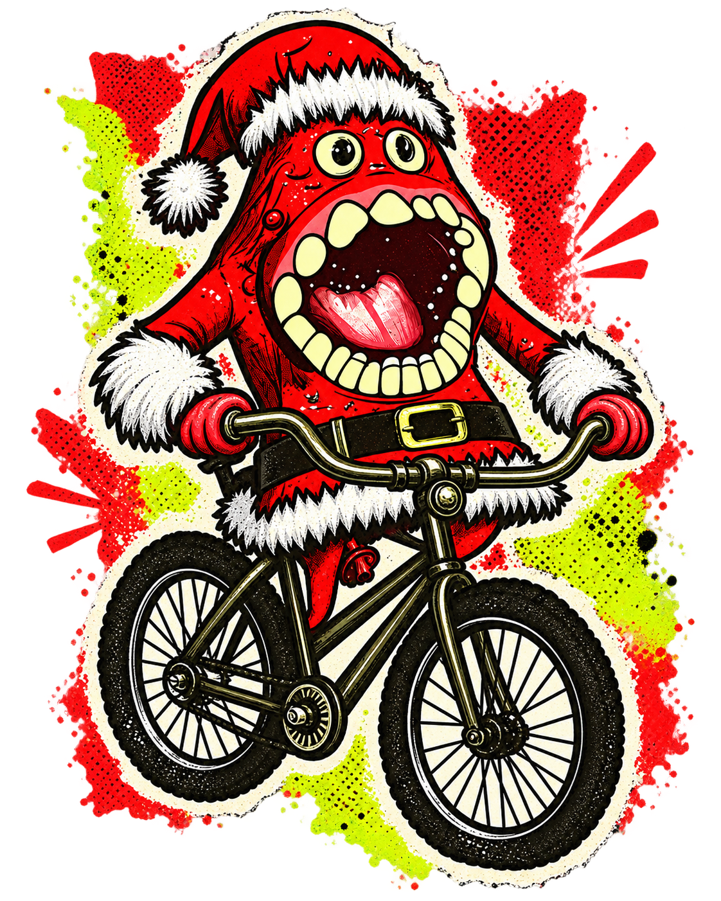
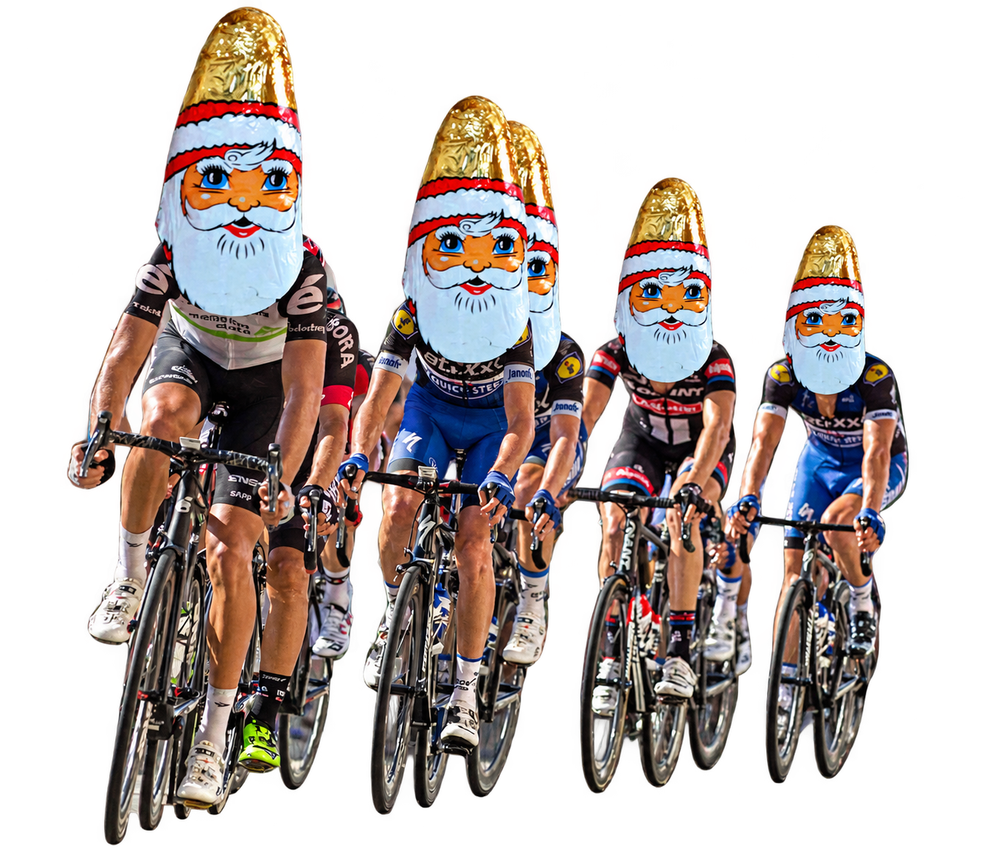
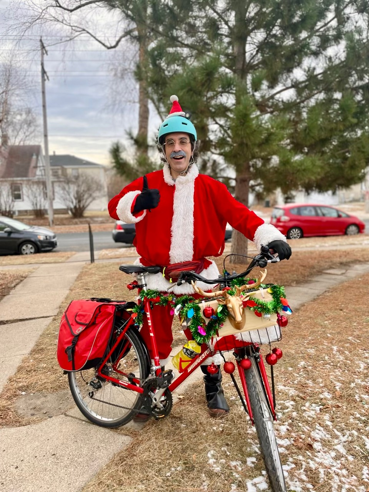
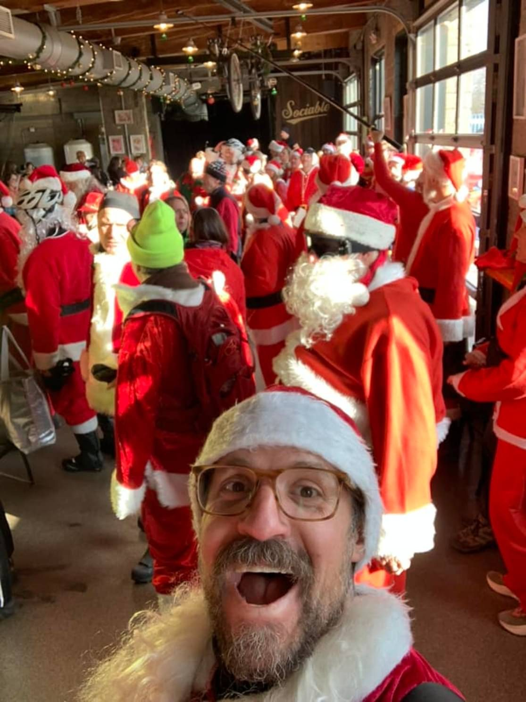
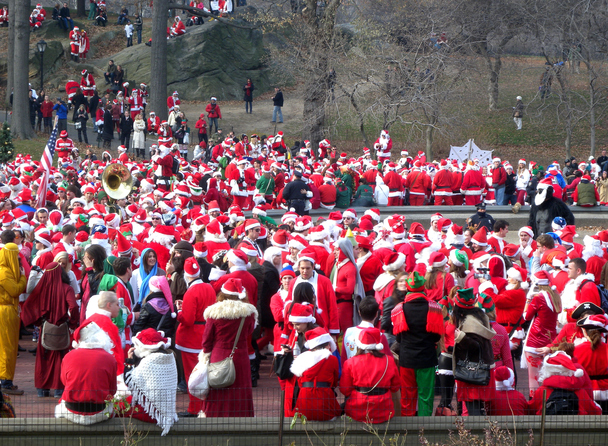

Minneapolis · Riding since 2013Santa bike ride · Toy drive · Dec 5 · Minneapolis
Twin CitiesSanta CycleRampageTHEY WANT USCHEERLESS
Fudge that. Get together. Spread cheer.
Minnesota's jolliest brewery ride and toy drive.
We ride bicycles from brewery to brewery across Minneapolis, dressed like Santas. The destination is the people we meet along the way.

Free ride. No registration. Facebook RSVP is optional.
- Free
- About 15 miles
- 5 to 6 breweries
- Bring a new, unwrapped toy
- No registration
The whole idea
What is this?
We ride bicycles from brewery to brewery across Minneapolis, dressed like Santas. But the destination is the people we meet along the way.
A little absurdity, a little beer, a gentle disregard for social norms, and a whole lot of bicycles, kindness, and holiday cheer.
JOIN THE RESISTANCE.
Work. Buy. Scroll. Repeat. Keep your head down. Keep to yourself.
Fudge that! There’s something about wearing a Santa suit that makes it easier to be kind to strangers and makes strangers more willing to accept that kindness.
The suit helps them lower their guard, while being part of a whole ridiculous group of Santas lets us lower ours and be openly joyful.
We bring toys for kids and ride from brewery to brewery through Minneapolis, but the people we meet are the destination.
That’s our particular brand of mayhem: in a weary world, kindness is its own kind of rebellion.

The whole crew rolls together
The five-step uprising.
Dress like Santa
Put on your Santa suit and meet at 10 AM for breakfast. Note: Many riders join at the first brewery, our second stop, and for them that is where the day begins.Put on the suit. Give people something other than bad news to stare at. Meet at 10 AM for breakfast, or join at the first brewery, our second stop. Plenty of us start there.
Bring a gift
Bring a new, unwrapped toy for kids in need and carry it on your bike. We collect at a brewery stop along the route. Your bike is your sleigh.Give a damn about somebody you may never meet. Bring a new, unwrapped toy for kids in need and carry it on your bike. We collect at a brewery stop along the route. Your bike is your sleigh.
Decorate your bike
Lights, tinsel, and whatever holiday nonsense you can dream up. Make your bike part of the fun.Tinsel. Lights. An unreasonable amount of holiday nonsense. Make your bike look like somebody still knows how to have fun.
Drink a beer
We ride from taproom to taproom for local craft beer, a roomful of Santas, and a little holiday mischief. Drinking is optional.Drink local craft beer with a roomful of ridiculous Santas. We ride from taproom to taproom across Minneapolis. The beer is part of the bash. Drinking is optional.
Spread some cheer
Wave to the people on the sidewalk and watching from their cars. Ring your bell. Give them something to smile about. Keep riding.Wave first. Ring your bell. Be the ridiculous thing that snaps somebody out of a lousy day. We spread cheer, not fear.
December 2026
2026 schedule
TBA
We meet at 10 AM, then ride to five or six breweries. About 15 miles, and we take it slow. Times will be approximate, with a finish time posted once the route is set.
- Departure time
- TBA
- Toy collection stop
- TBA
Not riding the whole thing? Join at any stop. Most people jump in at the first brewery, stop 2. Arrival times are posted here once the route is set.
The ride gives back
Bring a gift.Give a damn. Bring a gift.
Toys for kids in need.
Bring a new, unwrapped toy and carry it on your bike. We collect at a brewery stop along the route, and the toys go to the Salvation Army. Your bike is your sleigh.The world gives kids enough to worry about. Bring a new, unwrapped toy and carry it on your bike. We collect at a brewery stop along the route, and the toys go to the Salvation Army. Your bike is your sleigh.
FAQQuestion everything.
Do I need to register?
No. The ride is free and there is no registration. Show up and ride. You can RSVP on Facebook, it’s optional, but appreciated!
No tickets. No registration. The ride is free. Show up and ride. An RSVP on Facebook is optional, but appreciated. That’s the entire entrance exam.
Can I come alone?
Yes. You don’t need to know anyone to join us. Come on your own or bring a friend. Put on your Santa suit, say hello, and ride with the group.
Yes. You don’t need a crew or an introduction. Put on your Santa suit, say hello, and ride with us. We’re all strangers until somebody waves first.
Do I have to dress like Santa?
A Santa suit is the idea, and most of us wear one. You’re still welcome if you turn up as something else. We’ve had Christmas trees, Krampus, and a whole assortment of characters from the old stop-motion Christmas specials.
A Santa suit is the idea, and most of us wear one. But a Christmas tree, Krampus, or a character from the old stop-motion Christmas specials can join the mayhem too. You’re welcome as something else. Give us something to grin at.
What if there's snow?
We’ve ridden through snowstorms, ice, freezing rain and, unfortunately, increasingly warm weather. Christmas is starting to feel like Christmas in July. Yikes.
It’s Minneapolis in December, so dress appropriately. We’re seeing more and more fat bikes on the ride these days. They’ve become pretty common. If there’s snow or ice, studded tires are recommended.
Ultimately, ride only in conditions you’re comfortable with, and make sure your bike is set up accordingly. Even in the coldest years, people often start shedding layers by midday.
You may see Santas ducking into brewery bathrooms to peel off sweaty sweatpants beneath their costumes.
Turns out Santa suits don’t breathe particularly well.
Are kids allowed?
Sorta. Kids need to be with a parent or guardian, but this isn’t an event made for kids. We pride ourselves on not being rowdy, but it’s still a winter brewery ride with adults drinking. The full ride is about 15 miles, conditions can be icy, and the last stops are after dark.
If you bring kids, use your judgment about the conditions and distance. Joining for one or two stops earlier in the day may be a better fit than the full ride. If you’re driving between stops, stay sober.
Ride at your own risk and follow traffic laws.
Can I come if I don't ride a bicycle?
Absolutely. Check the schedule and meet your friends at a brewery. You can join the roomful of Santas without riding between stops.
Or invite some unsuspecting friends out for lunch at one of our stops. Plan to arrive about 30 minutes before we do.
Don’t tell them about the Santas. Let us be the surprise.
Joy in the wild
The vibeMake a scene. Make a friend. Give something away.
A little absurdity, a little beer, a gentle disregard for social norms, and a whole lot of bicycles, kindness, and holiday cheer.The news can have the doom. We’re taking a day for Santa suits, bicycles, local craft beer, and making strangers grin. A little mayhem pointed in a good direction.




Dress like Santa.
A Santa suit is the idea. We've also had Christmas trees, Krampus, and a whole assortment of characters from the old stop-motion Christmas specials.A Santa suit is the idea. Christmas trees, Krampus, and characters from the old stop-motion Christmas specials have all joined us. Bring your particular brand of ridiculous.
The costumes help us lower the shields we put around our hearts. They make it easier to be kind to strangers, and easier for strangers to open up to us. Like little kids meeting each other and asking, “Want to play?” A Santa suit doesn’t have to hide your true self. Sometimes it lets that self come out.We spend enough of our lives keeping our heads down. The suit gives strangers permission to smile at us. The whole ridiculous group gives us permission to smile back. For a day, we get to be little kids again and ask, “Want to play?”
History
From anarchy to kindness.
San Francisco · 1994
The rebellion.

Pranksters in cheap Santa suits turned Christmas into absurdist street theater. The point was to disrupt the status quo.
Cacophony Society Cheap Suit Santas, 1994 to 1995.Photo: Peter Field New York · Still going
The spectacle.

On the East Coast, the joke changed. Anonymity and alcohol turned flash-mob strangeness into a drunken “bro-pocalypse.” It’s still going.
SantaCon, Central Park, New York, 2010.Photo: Jim Henderson / CC0 Minneapolis · 2013
The remix.

We took the anarchy from San Francisco and the Santa suit from New York, kept the beer, and pointed the whole ridiculous thing toward spreading joy.
Santas on bicycles, Minneapolis.Source: Santa Cycle Rampage MSP Media Center
San Francisco taught us to disrupt. New York showed us what happens when the joke loses its purpose. Minneapolis found another way: keep the chaos, but make somebody's day better.We kept the absurdity, the suits, and the beer. Then we pointed them at the sadness of the season. A wave. A laugh. A gift for a kid. A whole city full of people worth being kind to.
In a weary world, kindness is its own kind of rebellion.
Ride updates and more cheer